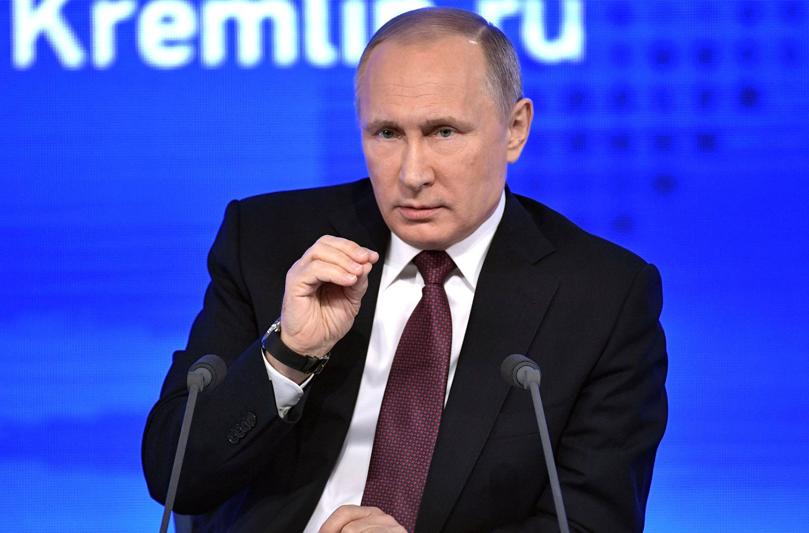

🠗Putin🠗
The relationship between Russia and Belarus is historically characterized by close cooperation and interdependence. Both countries share a common history, culture, and language, which fosters the strengthening of ties. Economic relations include integration within the framework of the Union State, as well as cooperation in areas such as energy and industry. However, in recent years, there have been tensions related to political issues and economic interests. Belarus seeks to maintain its independence, which sometimes leads to strain in relations with Moscow. Nevertheless, both sides continue to seek compromises, understanding the importance of strategic partnership for stability in the region.